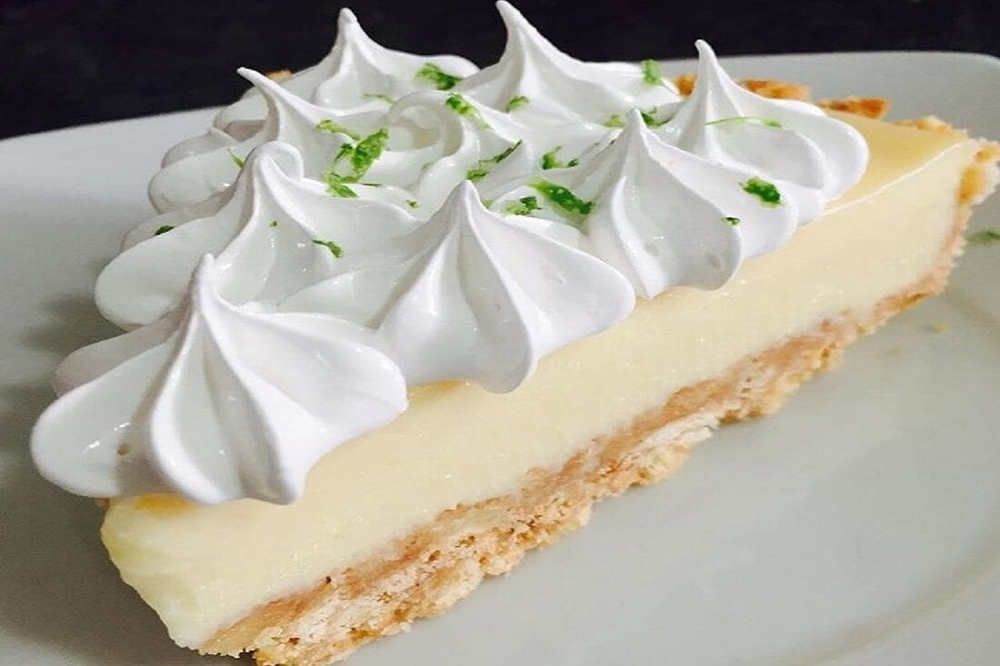
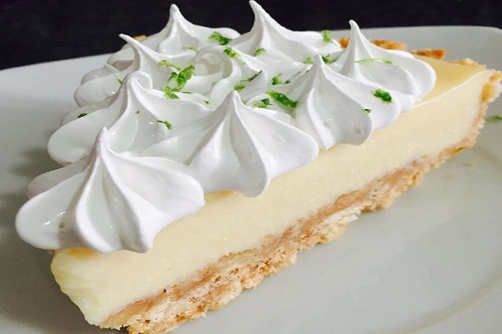

Introduccion
Me llamo Victor Hugo Leras De Leon, soy Ingeniero Industrial
interesado en la transicion al campo de la Ciencia y Analisis de Datos.
Me apasionan los pugs, los juegos de cartas, hacer ejercicio. Tengo una debilidad con el pie de limon
Conocimiento y destrezas profesionales
- Diseno de distribuciones de plantas industriales
- Dibujo y anotaciones
- Planificacion y filosofias de produccion
- Programacion
- Analisis de datos y control estadistico de calidad
Puedes encontrarme en los siguientes sitios
- Twitter :)
- Instagram ;)
- Linkedin :D
 
